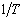
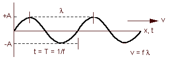
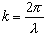
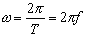
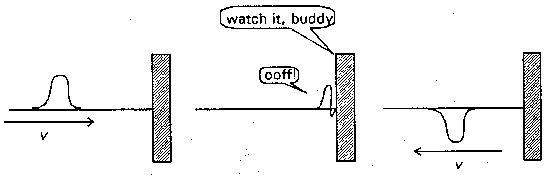
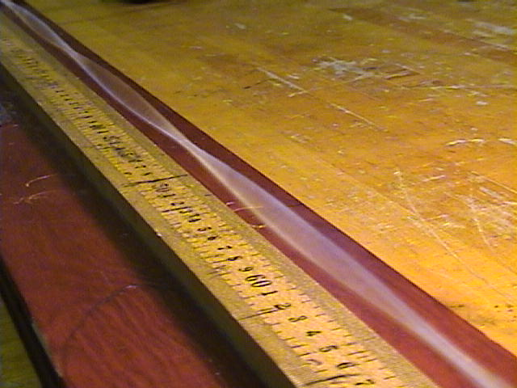
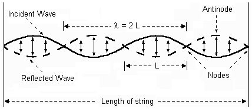
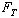
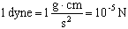

|
|

|
224 Physics Lab: Standing Waves
|
223 & 224 Lab Overview |
Return to Physics 224 Labs
Purpose
This laboratory experiment is designed to study the parameters that affect
standing (stationary) waves in various strings. The effects of string tension
and density on wavelength and frequency will be studied. Three experiments will
be conducted to find (1) the frequency of the electric vibrator, (2) the density
of Kevlar string and (3) an unknown tension on the Kevlar string.
Background
A wave is the propagation of a disturbance through a medium. The physical
properties of that medium (e.g., density and elasticity)
will dictate how the wave travels within it. A wave may be described by its basic
properties of amplitude, wavelength, frequency and period T.
Figure 1 displays all of these properties. The amplitude,
,
is the heigh of a crest or the depth of a trough of that wave. The wavelength,
,
is the distance between successive crests or successive troughs. The time
required for a wave to travel one wavelength is called the period,
.
The frequency,
,
is
 ,
and is defined as the number cycles (or crests) that pass a given point
per unit time.
| |
|

|
|
Figure 1. Properties of a standing wave.
|
Since the wave travels one wavelength in one period, the wave velocity is
defined as
.
The wave velocity can then be written as
Relationships
between these basic properties give the angular properties of the wave:

and
 ,
where
is the wave number and
is the angular frequency. We can then write a one dimensional sinusoidal
wave function for a wave traveling to the right as
.
In this experiment, we will introduce an oscillating disturbance to a length
of string with the use of an electric vibrator. The vibrator shakes the string
back and forth, creating a disturbance perpendicular to the string's length.
This disturbance, then, propagates along the string until it hits the stationary
pulley about
one meter away. This wave is known as a transverse wave since its
disturbance is perpendicular its motion.
When the wave reaches the pulley-end of the string it is reflected back
toward the vibrator-end of the string. In doing so, the disturbance is not
only reflected back along the string, but it is also reflected over the
axis of propagation. This is shown in the figure.
| |
|

|
Figure 2. When a wave encounters a physical barrier
such as the wall in
this cartoon, it is reflected backwards and is inverted over the axis of
propagation.
(Reprinted with permission from Laney Mills.)
|

When a vibrating body produces waves along a tightly stretched string (click
on the image to the right),
the waves are reflected at the end of the string which cause two oppositely
traveling waves to exist on the string at the same time.
These two waves interfere with each other, creating both
constructive and destructive interference in the vibrating string.
If the two waves have identical amplitudes, wavelengths and velocities,
a standing wave, or stationary wave,
is created.
The constructive and destructive interference patterns caused by the
superposition of the two waves create points of minimum displacement called
nodes, or nodal positions, and points of maximum displacement
called antinodes. If we define the distance between two nodes
(or between two antinodes) to be
,
then the wavelength of the standing wave is
.
Figure 3 illustrates the case where the length of string vibrates
with 5 nodes and 4 antinodes.
| |
|

|
|
Figure 3. A standing wave is created when an incident
and reflected wave have identical amplitudes, wavelengths and
velocities.
|
It is possible to obtain many discrete vibrational modes in a stretched string.
That is, for a string to vibrate with a specific wavelength, the tension applied
to the string must have a certain value. It is possible for the string to vibrate
with another specific wavelength, but the tension must be adjusted until that
particular mode is reached. If the tension is such that it is between vibrational
modes, the string will not exhibit the standing wave phenomenon
and we won't see a standing wave. When the
frequency of the vibrating body is the same as that of the particular vibrational
mode of the string, resonance is established.
The wave velocity of a standing wave is dependent on the medium through
which the wave travels. The velocity of standing waves propagating through
a taunt string, for instance, is dependent on the tension in the string,
 ,
and the linear density of the string,
.
For waves of small amplitude this velocity is given by
where the linear density,
,
is the mass of the string,
,
divided by its length,
,
Setting Equations 1 and 2 equal and solving for
,
we find the relationship between wavelength and tension, namely
Objectives
- Use the white household string and the standing wave apparatus
to find the vibration frequency,
,
of the electric vibrator.
- Use the standing wave apparatus to independently determine the linear density,
,
of the yellow Kevlar string. Use the accepted frequency of the driver
in your calculations for this objective (f = 120 Hz). (N.B.:
You will need to use the light-weight plastic cup as your shot container
when using the Kevlar string.)
- Replace the lead shot container with the unknown mass. Then use the
standing wave apparatus along with the Kevlar string and the
movable vibration stop to determine this unknown mass.
Equipment and setup
- (Figure 1.) The pulley-end of the standing wave apparatus.
- (Figure 2.) The electric vibrator of the standing wave
apparatus.
- (Figure 3.) The triple-beam balance with counter weights. The
counter weights are used to measure masses over 610g.
- (Figure 4.) These containers are attached to strings shown
in Figure 6. Filling the containers with lead shot (see
Figure 5) creates the necessary tension in the string. One container
is made of metal and the other is a lighter one made of plastic.
The C-bolt (pictured)
is used to attach the containers to the strings.
- (Figure 5.) The supply of lead shot.
- (Figure 6.) Two types of string will be used in this
experiment: household string (white) and Kevlar string (yellow).
- (Figure 7.) The lead shot container is suspended from the
string. Note the bucket is positioned so that if the container
were to fall, lead shot will not spill all over the floor.
- (Figure 8.) The vibration stop. The stop's position
may be adjusted along the length of the meter stick.
- (Figure 9.) A weight of unknown mass.
- (Figure 10.) An image of a standing wave on the household
string.
- C-clamp.
- Additional meter stick.
|
[Click on images to enlarge.]
|
Hints and Cautions
- Caution!!! Wash hands after handling the lead shot.
- Keep the white lead shot bucket under the hanging container to prevent
lead shot from rolling all over the lab room floor in the event the
container should unexpectedly fall.
- It may be useful to use the unit of dynes rather than Newtons
when measuring the tension force. Note that
 .
Online Assistance
- Adding a trendline
to an Excel plot
- Adding a non-linear
trendline to an Excel plot
- Create plots of two
data series on one graph
- Fitting multiple
curves (trendlines) to one data set
- Clemson Physics Lab Tutorials
- Measurement
uncertainties
- Using Excel
- Graphing data
using Excel
- Using error
bars in Excel
Lab Report Template
Each lab group should
download the Lab Report Template
and fill in the relevant information
as you perform the experiment. Each person in the group
should print-out the Questions section and answer them individually.
Since each lab group will turn in an electronic copy of the lab report,
be sure to rename the lab report template file. The naming convention is as
follows:
[Table Number][Short Experiment Name].doc.
For example the group at lab
table #5 working on the Ideal Gas Law experiment would rename their template file
as "5 Gas Law.doc".
Questions
Each student should
download the questions.
Each person in the group
should print out the questions and answer them individually.
Discussing the questions as a group is acceptable, but each student is responsible
for turning in answers that represent their own work, not the work of others.
Nudge Questions
These Nudge Questions are to
be answered by your group and checked by your TA as you do the lab. They
should be answered in your lab notebook.
General Nudges
- Are standing waves produced for any given string tension?
- How will you measure the wavelength of the vibrating string?
- What is the uncertainty in your measurement of the wavelength of the
vibrating string?
- What steps did you take to decrease the error or uncertainty
in the wavelength measurements?
- How will you determine the tension in the string?
- What is the uncertainty in the tension measurement?
- What units will you use in this lab, m-k-s or c-g-s?
Objective 1 Nudges
- How will you determine the linear density,
,
of the household string?
- Based on measurement uncertainties, what are the maximum and minimum
values of
?
- How many measurements will you record for this Objective? Is there
a finite or an infinite number of measurements that can be made?
- What parameters will you graph in order to measure the frequency
of the electric vibrator?
- Did your best-fit line fall within the data points' error bars?
- From your graph, what is the nominal measured
value for the vibrator frequency,
?
- Using your findings in Nudge #2 above, what are the maximum and
minimum values for
?
- Knowing that electrical current in the United States oscillates at
60Hz, does your value for
make sense?
Objective 2 Nudges
- What is the maximum number of
antinodes that you were able to create with this setup?
- Were you able to obtain one antinode?
- Is there a relationship between the string tension and the
number of antinodes created?
- What parameters will you graph in order to measure the density
of the Kevlar string?
- Did your best-fit line fall within the data points' error bars?
- What is your value for the density of the Kevlar string. (Use
= 120Hz.)
- How does your value of
compare to the accepted value?
Objective 3 Nudges
- What is the distance between the vibrator and the vibrator stop necessary
to produce a standing wave? What is the distance,
,
between nodes?
- How can you reduce the uncertainty in
?
- Are there other distances at which standing waves are formed? If so, is
constant or does it depend on the
position of the vibrator stop? Is this what you expect?
- How did you determine the wavelength,
,
for this setup?
- Using your calculated values for
,
and
,
explain how you can determine the value of the unknown mass without using a
scale.
- What is your calculated value of the unknown mass?
- How does your calculated value of the mass compare to a measured value?
TA Notes
- Watch the students' time; this could be a long lab (especially since it is
the first one) and the number of Objectives may need to be decreased.
- While it is possible for one antinode to be formed with the Kevlar
string, it is beyond the strength of the household string to support
the weight necessary to produce one node. Caution students to
stop at 2 antinodes when using the household string, otherwise you
will be picking up lead shot for quite a while!
Data, Results and Graphs
Answers to Questions
Lab Manual
CUPOL Experiments
As of now, there are no
CUPOL experiments
associated with this experiment.
If you have a question or comment, send an e-mail to Lab Coordiantor:
Jerry Hester
223 & 224 Lab Overview |
Return to Physics 224 Labs
|
|